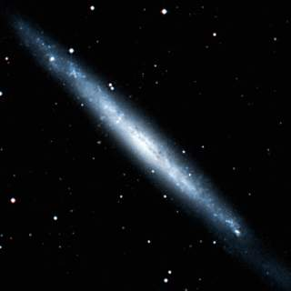
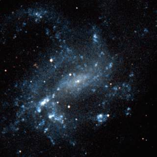
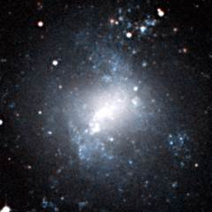
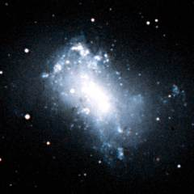
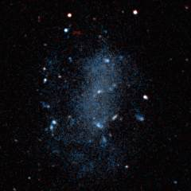
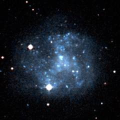
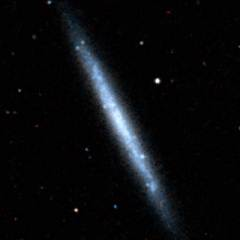
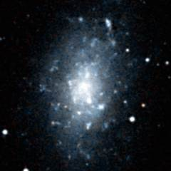

The Canes I group is another neighbouring group of galaxies, although it does not contain very many prominant galaxies. There are a lot of galaxies in the Canes Venatici region of the sky and it is only recently that distance estimates have become good enough to distinguish the Canes I group galaxies from the numerous background galaxies in this region.
Below - the two largest galaxies in the Canes I group. NGC 4244 (left) is an edge-on spiral galaxy which with a diameter of about 65000 light years is the largest galaxy in the group. NGC 4395 (right) is a (very dim) example of a Seyfert galaxy which means that it has a bright point-like nucleus (containing a supermassive blackhole of a few thousand solar masses).
|  |  |
| NGC 4244 | NGC 4395 |
This is a list of the main galaxies in the Canes I group. There are not any particularly large galaxies in this group, but this group does contain a lot of medium-size dwarf galaxies with diameters in the range of 5 to 25 thousand light years.
1 2 3 4 5 6 7 8 9
Name Equatorial Blue Type Size Size RV Other
Coordinates Mag (') kly km/s Names
RA Dec
UGC 6541 11 33.5 +49 14 14.5 Irr 1.2 5 455
NGC 3738 11 35.8 +54 31 12.1 Irr 2.5 10 406
NGC 3741 11 36.1 +45 17 14.6 Irr 2.0 10 454
UGC 6817 11 50.8 +38 52 13.4 Irr 4.1 15 497 DDO 99
NGC 4068 12 04.0 +52 35 14.1 Irr 3.3 15 394
NGC 4163 12 12.1 +36 10 14.5 Irr 1.8 5 423
NGC 4190 12 13.7 +36 38 14.0 Irr 1.7 5 487
UGCA 276 12 14.9 +36 13 18? Irr 1.0 5 542 DDO 113
NGC 4214 12 15.6 +36 19 10.2 Irr 8.5 30 548
NGC 4244 12 17.5 +37 48 11.1 Sc 16.6 65 493
UGC 7321 12 17.5 +22 32 14.1 Scd 5.5 20 715
IC 779 12 19.6 +29 53 15.4 E 1.0 5 560
IC 3308 12 25.3 +26 42 16.4 Scd 1.3 5 605
NGC 4395 12 25.9 +33 32 11.4 SBd 13.2 50 585
UGCA 281 12 26.2 +48 29 15.4 Irr 0.8 5 481
UGC 7559 12 27.1 +37 08 14.2 Irr 3.2 10 468 DDO 126
UGC 7577 12 27.6 +43 29 12.9 Irr 4.3 15 418 DDO 125
NGC 4449 12 28.2 +44 05 10.1 Irr 6.2 25 422
UGC 7605 12 28.7 +35 42 14.8 Irr 1.1 5 563
UGC 7698 12 32.9 +31 32 13.1 Irr 6.5 25 602 DDO 133
UGCA 290 12 37.4 +38 45 15.7 Irr 0.4 2 694
UGCA 292 12 38.4 +32 46 16.1 Irr 1.0 5 571 CVn Dwarf A
IC 3687 12 42.2 +38 30 13.7 Irr 3.4 15 597 DDO 141
M94 12 50.9 +41 07 8.8 Sab 11.2 40 532 NGC 4736
NGC 4789A 12 54.1 +27 09 14.1 Irr 3.0 10 648 UGC 8024
IC 4182 13 05.8 +37 36 12.5 Sm 6.0 25 546
UGC 8215 13 08.0 +46 49 17? Irr 1.0 5 408
NGC 5023 13 12.2 +44 02 12.8 Sc 6.0 25 607
UGC 8308 13 13.4 +46 19 18.8 Irr 1.1 5 356 DDO 167
UGC 8320 13 14.5 +45 55 12.7 Irr 3.6 15 385 DDO 168
UGCA 342 13 15.1 +42 00 17? Irr 1.6 5 593
NGC 5204 13 29.6 +58 26 11.7 Sm 5.0 20 329
UGC 8508 13 30.8 +54 55 14.8 Irr 1.7 5 204
NGC 5229 13 34.1 +47 55 14.7 SBcd 3.3 15 535
NGC 5238 13 34.7 +51 37 14.3 Sd 1.7 5 388
UGC 8638 13 39.3 +24 47 15.1 Irr 1.2 5 523
UGC 8651 13 39.9 +40 44 14.5 Irr 2.3 10 399 DDO 181
UGC 8760 13 50.9 +38 01 14.4 Irr 2.2 10 391 DDO 183
UGC 8833 13 54.8 +35 50 15.2 Irr 0.9 5 431
UGC 9128 14 15.9 +23 03 14.7 Irr 1.7 5 371 DDO 187
UGC 9240 14 24.7 +44 31 13.6 Irr 1.8 5 301 DDO 190
|
Column 1: The usual name of the galaxy.
Column 2: The Right Ascension for epoch 2000.
Column 3: The Declination for epoch 2000.
Column 4: The blue apparent magnitude of the galaxy.
Column 5: The galaxy type: E=Elliptical, S0=Lenticular, Sa,Sb,Sc,Sd=Spiral,
SBa,SBb,SBc,SBd=Barred Spiral, Sm,SBm,Irr=Irregular.
Column 6: The angular diameter of the galaxy (arcminutes).
Column 7: The diameter of the galaxy (thousands of light years).
Column 8: The recessional velocity (km/s) of the galaxy relative to
the cosmic microwave background.
Column 9: Other names of the galaxy.
References:
Karachentsev I, Sharina M, Dolphin A, E. Grebel K, Geisler D,Guhathakurta P, Hodge P,
Karachentseva V, Sarajedini A, Seitzer P, (2003), Galaxy Flow in the Canes
Venatici I Cloud. Astron Astrophys, 398, 467.
Sharina M, Karachentsev I, Tikhonov N, (1999), Distances to eight nearby isolated
low-luminosity galaxies. Astron Lett, 25, 322.
Makarova L, Karachentsev I, Takalo L, Heinaemaeki P, Valtonen M, (1998), Detailed
images and distance measurements for eighteen dwarf irregular galaxies in the
Canes Venatici cloud. Astron Astrophys Supp, 128, 459.
Makarova L, Karachentsev I, Georgiev Ts, (1997), Distances to six irregular galaxies
in the Canes Venatici cluster from the brightest stars. Astron Lett, 23, 378.
Schmidt K, Priebe A, Boller T, (1993), Nearby Galaxies. Astron Nachr, 314, 371.
The HyperLeda Database, (2003).
Below - three Canes I group galaxies. NGC 4214 (left) and NGC 4449 (centre) are two galaxies which are very similar in size and shape to the Large Magellanic Cloud and they are both actively forming stars. UGC 7698 (right), by contrast, seems to have ceased forming stars and is much fainter.
|  |  |  |
| NGC 4214 | NGC 4449 | UGC 7698 |
Shown below is M94 - the brightest (although not the largest) galaxy in the Canes I group. This galaxy seems to lie somewhere near the back of the group. M94 is a famous example of a ring galaxy - a galaxy which is surrounded by a ring of stars.
Below - three more galaxies in the Canes I group. IC 4182 (left) is an irregular galaxy with only faint signs of spiral structure. NGC 5023 (centre) is probably a small edge-on spiral galaxy. NGC 5204 (right) is an irregular galaxy which lies on the border of the Canes I group and the nearby M81 group.
|  |  |  |
| IC 4182 | NGC 5023 | NGC 5204 |
| Properties of the Canes I Group | |
|---|---|
| Equatorial Coordinates | RA=13h00m Dec=+40° |
| Galactic Coordinates | l=115° b=+75° |
| Supergalactic Coordinates | L=75° B=+10° |
| Distance to the centre of the group | 13 million light years |
| Number of large galaxies | 4 |
| Alternative names for the group | M94 Group |